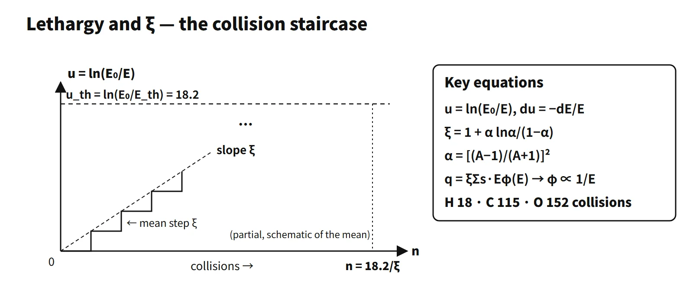

Reactor Physics & Kinetics · C-RX-025
Neutron Slowing Down and Lethargy (u, ξ) — Logarithmic Energy That Builds Up by the Same Amount per Collision
Every elastic collision adds the same distribution of lethargy, so neutrons need about 18.2/ξ collisions to slow from 2 MeV to 0.025 eV.
Lethargy u = ln(E₀/E) is a dimensionless variable that measures, on a logarithmic scale, how far a neutron's energy has come down from a reference energy E₀ (du = −dE/E). ξ, the average logarithmic energy decrement, is the mean increase in lethargy per collision, ⟨ln(E/E′)⟩.
Principle and mechanism
A first line for an exam answer can be: "lethargy u = ln(E₀/E) is a dimensionless measure of how far slowing down has progressed; its mean increase per elastic collision, ξ, does not depend on energy, so the number of collisions to thermalize is n = ln(E₀/E)/ξ". Textbooks choose 10 MeV or 2 MeV as E₀, but only the difference Δu has physical meaning. Korean exam papers mix several spellings of the term, and the 2009 question used the symbol μ; this entry uses the standard symbol u.
Up to ξ in one paragraph
For elastic scattering off a stationary nucleus of mass number A, isotropic in the centre-of-mass frame, the post-collision energy E′ is uniformly distributed between αE and E. Here α = [(A−1)/(A+1)]², and taking the logarithmic average gives ξ = 1 + α·lnα/(1−α).
In lethargy space, every collision rolls the same die
If the energy ratio r = E′/E is uniform between α and 1, the lethargy gain Δu = −ln r is distributed as
f(Δu) = e−Δu/(1−α), 0 ≤ Δu ≤ ln(1/α)
There is no E in this formula. Whether the collision happens at 2 MeV or at 1 keV, on the lethargy axis the neutron rolls exactly the same die. On the energy axis, a fast neutron loses more eV per collision than a slow one, but on the logarithmic axis the distribution of step sizes is the same. Lethargy therefore accumulates in a straight line, by ξ on average per collision, and the number of collisions to thermalize is n ≈ Δu/ξ. This is why lethargy is the "natural variable" of slowing down.
From 2 MeV to 0.025 eV, Δu = ln(8×10⁷) = 18.2, so n = 18.2/ξ: 18 collisions for hydrogen, 115 for carbon and 152 for oxygen.
![Graph of lethargy u from 0 to 18.2 against number of collisions from 0 to 170, with a right-hand energy scale from 2 MeV to 0.025 eV; straight mean lines reach thermal at about 18 collisions for hydrogen, 115 for carbon and 152 for oxygen, dashed head-on minimum lines at 55 for carbon and 73 for oxygen, a stepped carbon sample history, 90 percent ranges of 106 to 127 for carbon and 141 to 165 for oxygen, a card with the lethargy definition, a plot of the carbon lethargy-gain distribution falling from 3.52 to 2.52 with mean 0.158 and end 0.334, and a table of xi values](../../assets/images/concepts/c-rx-025-lethargy-slowing-down/fig1-lethargy-staircase.webp)
Two additions. First, 18.2/ξ is an approximation of the mean. For hydrogen Δu is exponentially distributed with mean 1, so the exact mean is 1 + 18.2 = 19.2 collisions. A 20,000-history calculation gave a mean of 116 collisions for carbon (central 90 % range 106–127) and 152 for oxygen (141–165). Second, the "minimum" number of collisions is a different quantity. With a head-on collision every time, lethargy rises by ln(1/α) per collision, so carbon needs 18.2/0.334 = 54.5 → 55 collisions and oxygen 18.2/0.250 = 72.7 → 73.
O-16 calculation (2018 exam, session 3, Q1)
α = (15/17)² = 0.7785, E₀ = 2 MeV.
| Part | Formula | Value |
|---|---|---|
| (a) Minimum energy | αE₀ | 1.557 MeV |
| (b) Mean energy after scattering | (1+α)E₀/2 | 1.779 MeV |
| (c) Mean loss per collision | (1−α)E₀/2 | 0.221 MeV (11.1 % of the current energy) |
| (d) ξ | 1 + α lnα/(1−α) | 0.120 |
| (e) Mean number of collisions | 18.2/ξ | about 152 |
Part (c) is the absolute value for the first collision. Adding that each later collision removes 11.1 % of the energy at that time avoids any misunderstanding.
Carbon calculation (2021 exam, session 4, Q2)
α = (11/13)² = 0.716, ξ = 0.158. The problem's wording "average logarithmic energy decrement (lethargy)" asks for the per-collision value ξ. In the answer, write both "ξ = 0.158 (mean lethargy gain per collision)" and "required total lethargy Δu = 18.2". The "minimum number of collisions" normally means the mean number 18.2/0.158 ≈ 115. The literal minimum (a head-on collision every time), however, is 55, so it is safest to state your interpretation in one line and give both.
Slowing-down density q and the 1/E flux
The slowing-down density q(E) is the number of neutrons per unit time and volume that pass downward through energy E. In a steady state with no absorption, no leakage and no source in that range, what comes in goes down, so q is constant. If ξΣs is also nearly constant,
q ≈ ξΣs·E·φ(E) → φ(E) = q/(ξΣs·E) ∝ 1/E
and the flux per unit lethargy, Eφ(E) = q/(ξΣs), is flat. This is why spectra are plotted as Eφ(E) on a logarithmic energy axis. In an ideal non-absorbing hydrogen medium this holds exactly at all energies below the source; for A > 1 it holds in the asymptotic region after the oscillations near the source (Placzek oscillations) have died out. The local relation is not used as it stands inside sharp resonances.
With weak absorption, q decreases as q(u) = q₀·exp[−∫Σa/(ξΣt)du]. Each time the neutrons pass the U-238 resonances at 6.67, 20.9 and 36.7 eV, q drops in steps, and the surviving fraction is the resonance escape probability p. In the homogeneous NR approximation p = exp[−NF·Ieff/(ξΣs)], so the larger the slowing-down power in the denominator, the faster neutrons jump across the resonances and the larger p becomes.
![Conceptual spectrum of flux per unit lethargy E phi of E on a logarithmic energy axis from 10 to the minus 3 to 10 to the 7 eV: a Maxwellian thermal peak near 0.05 eV, a flat slowing-down plateau with dips at the U-238 resonances 6.67, 20.9 and 36.7 eV, and a fission-source bump; below it a stepped plot of slowing-down density q over q0 dropping from 1 to p across the resonances; on the right a water-cascade analogy and a card with q approximately equal to xi Sigma s times E phi and the resonance escape formula](../../assets/images/concepts/c-rx-025-lethargy-slowing-down/fig2-lethargy-spectrum.webp)
The road to Fermi age
The same variable also accounts for spatial spreading. The Fermi age is τ = ∫D/(ξΣs)du [cm²] (when absorption is small so that Σt ≈ Σs), and the mean square straight-line distance from a point source to thermalization is 6τ. The slowing-down length √τ is 5.2 cm for H₂O, 11.4 cm for D₂O and 19.2 cm for graphite (Lamarsh, Table 5.3). Because hydrogen allows large lethargy jumps in a single collision, age theory, which assumes continuous slowing down, is inaccurate for it, and measured values of τ are used for light water.
What it means in a plant
- Core design calculations: multigroup cross-section libraries usually define their epithermal group boundaries by lethargy intervals (Δu). Resonance self-shielding and slowing-down calculations are also carried out in the lethargy variable.
- Light water reactors: thanks to ξ = 1 for hydrogen, neutrons thermalize in about 19 collisions and √τ is short, about 5 cm. This allows a tight lattice with a pitch of about 1.26 cm. The moderator-to-fuel ratio is designed on the undermoderated side.
- Moderator temperature coefficient: when temperature rises, water density falls and Σs, and hence ξΣs, decreases. p drops and τ grows (more leakage), so the MTC is negative.
- Graphite and heavy-water reactors: ξ is small, so more collisions are needed and √τ is long, giving large cores and moderator volumes.
- Limits of applicability: below a few eV (thermal range), thermal motion of the target and chemical binding cause upscattering, and the "constant ξ" model fails. Above a few MeV, inelastic and anisotropic scattering come in.
Regulatory basis
No regulation defines lethargy itself. Slowing-down and spectrum calculations underpin core nuclear design, and connect to the following requirements:
- 10 CFR 50 Appendix A, GDC 10 and 11, and NUREG-0800 SRP 4.3 (Nuclear Design): review of nuclear design methods and code validation.
- Korean technical standard rule for reactor facilities, Article 17 (reactor design) and Article 18 (inherent protection of the reactor); current version NSSC Rule No. 37 (2026-03-30).
- RG 1.190 (2001): methods for calculating and measuring pressure-vessel neutron fluence (E > 1 MeV), where the high-energy tail of the slowing-down spectrum is obtained by multigroup transport calculations.
- Then and now: the slowing-down physics has not changed. The legal framework moved from the Atomic Energy Act to the Nuclear Safety Act (2011).
Easily confused pairs
| Lethargy u | ξ | |
|---|---|---|
| Nature | Cumulative state variable | Mean increase per collision |
| Definition | ln(E₀/E) | ⟨ln(E/E′)⟩ |
| Carbon, 2 MeV → 0.025 eV | 18.2 | 0.158 |
| Mean number of collisions | Minimum number of collisions | |
|---|---|---|
| Formula | Δu/ξ | Δu/ln(1/α) |
| Carbon / oxygen | 115 / 152 | 55 / 73 |
| Assumption | Average over random scattering angles | Head-on collision every time |
| Slowing-down density q | Flux φ | |
|---|---|---|
| Meaning | Rate of passing down through E | Path-length density per unit energy |
| Slowing-down region (no absorption) | Constant | 1/E |
The mean energy ⟨En⟩ = E₀[(1+α)/2]n and the geometric mean E₀e−nξ are also different. Collision counts are computed with the logarithmic mean, ξ.
Key points at a glance
- Lethargy u = ln(E₀/E), du = −dE/E, dimensionless; increases as energy decreases; the reference E₀ is arbitrary (only differences matter).
- α = [(A−1)/(A+1)]²; after scattering E′ is uniformly distributed between αE and E.
- ξ = ⟨ln(E/E′)⟩ = 1 + α lnα/(1−α); mean lethargy gain per collision, independent of E.
- Δu distribution f(Δu) = e−Δu/(1−α) → collisions are equivalent in lethargy space → the natural variable of slowing down.
- Number of collisions n = ln(E₀/E)/ξ = 18.2/ξ (2 MeV → 0.025 eV): H 18, C 115, O 152.
- Minimum number of collisions (head-on every time) = 18.2/ln(1/α): C 55, O 73.
- Mixtures: ξ̄ = ΣξiΣs,i/ΣΣs,i (H₂O 0.92).
- Slowing-down density q = ξΣsEφ(E) constant → φ ∝ 1/E, Eφ flat.
- Links: resonance escape p = exp[−NFIeff/(ξΣs)]; Fermi age τ = ∫D/(ξΣs)du.

This is a model answer, not an official solution. It reflects the criteria current as of 2026.
Exam relevance
Lethargy has appeared four times in the Korean Professional Engineer (Nuclear Power) exam: 78th exam, session 1, Q4 (a short-answer item, "Lethargy"); 2009 exam, session 1, Q9 (ξ and lethargy); 2018 exam, session 3, Q1 (slowing down by collisions with oxygen: minimum and mean energy after scattering, mean loss, ξ and the number of collisions); and 2021 exam, session 4, Q2 (lethargy and number of collisions for a carbon moderator). The question types are a definition short answer and α–ξ–collision-count calculations from 2 MeV to 0.025 eV.
Watch the wording: "average logarithmic energy decrement (lethargy)" asks for the per-collision value ξ, and "minimum number of collisions" may mean the mean number 18.2/ξ or the literal head-on minimum 18.2/ln(1/α). State your interpretation and give both.